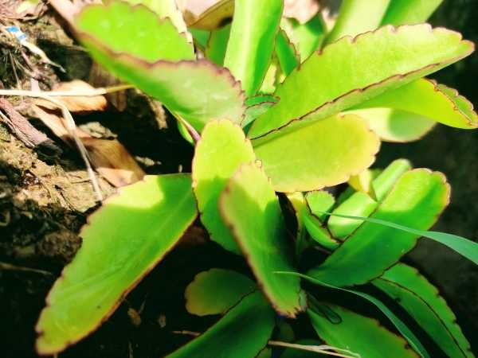

Kalanchoe pinnata
Common Names: Miracle Leaf, Cathedral Bells, Life Plant, Ranakalli
Local Name: ரணகள்ளி / இலை வழி முளை (Tamil), Patharchatta (Hindi)
Family: Crassulaceae
Origin: Madagascar; naturalized in tropics
Plant Type: Perennial succulent herb
Average Lifespan: Perennial; 3–5 years
| Growth Habit | Erect, fleshy succulent herb; produces plantlets along leaf margins |
| Plant Size | 0.5–1.5 meters tall |
| Leaves | Thick, fleshy, pinnate; scalloped margins produce tiny plantlets; unique viviparous reproduction |
| Flowers | Tubular, pendulous; greenish-pink to red; in terminal panicles |
| Root System | Shallow, fibrous root system; easily propagated |
| Climate | Tropical to subtropical; tolerates heat and mild drought |
| Temperature Range | 15–35°C |
| Soil Type | Well-drained sandy or loamy soil; does not tolerate waterlogging |
| Soil pH Preference | 6.0–7.5 |
| Sun Requirement | Full sun to partial shade |
| Water Requirement | Low; drought-tolerant; water moderately |
| Can it Grow in Pots? | Yes, excellent container plant |
| Fertilizer Schedule | Minimal; occasional compost; avoid excess nitrogen |
| Common Pests | Root rot from overwatering; mealybugs occasionally; generally hardy |
| Propagation by Cuttings | Leaf margin plantlets root easily when placed on soil; stem cuttings also work well |
| Water Usage | Low; stores water in leaves; suitable for low-maintenance gardens |
| Biodiversity Benefits | Flowers attract sunbirds and bees; self-propagating ground cover |
| Anti-inflammatory Properties | Leaves used for wounds, burns, and skin infections; anti-inflammatory and antimicrobial |
| Digestive Health | Used for kidney stones, hypertension, and urinary disorders in traditional medicine |
| Immune Support | Leaf juice used for fever, headache, and as an immune tonic in folk medicine |
Disclaimer: Information provided is for educational purposes only and not a substitute for medical advice.
Add your field observations here.